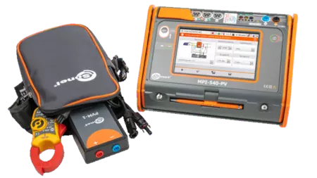

Sprawdzenia odbiorcze i okresowe instalacji elektrycznych
Rusiec • Mazowieckie
Masz już fotowoltaikę? Sprawdźmy, czy naprawdę wykorzystujesz jej możliwości.
Diagnozuję słabą produkcję, analizuję pracę falownika i magazynu energii, wykonuję pomiary oraz wdrażam Smart Home i automatykę zwiększającą autokonsumpcję energii z fotowoltaiki.
Mogę pomóc:
Mogę pomóc znaleźć przyczynę niskiej produkcji, zwiększyć
autokonsumpcję, dobrać magazyn energii, połączyć fotowoltaikę
ze Smart Home albo sprawdzić instalację pomiarami.
- ✓ Diagnostyka zamiast zgadywania
- ✓ Pomiary i protokoły
- ✓ Kwalifikacje G1 E i D
Home Assistant
Przepływ mocy
podgląd na żywo
21%
Poziom baterii
Ładowanie
Oszczędności dzisiaj
29,18 zł
Produkcja, zużycie i magazyn w jednym widoku
Dane demonstracyjne • telefon • tablet • ekran ścienny
Technologia pomiarowa
Pomiary bez kompromisów.
SONEL MPI-540-PV Solar.
Pomiary wykonuję zaawansowanym zestawem klasy premium przeznaczonym zarówno do instalacji elektrycznych, jak i fotowoltaicznych. To nie jest przypadkowy miernik — to kompletne zaplecze do rzetelnej diagnozy.
Profesjonalne zaplecze pomiarowe
Sprzęt klasy premium
Dokładność, bezpieczeństwo i wyniki, na których można oprzeć decyzję.
- 01 Pomiary ochronne, odbiorcze i okresowe
- 02 Diagnostyka instalacji PV po stronie AC i DC
- 03 Rezystancja izolacji, uziemienia, RCD i pętla zwarcia
- 04 Nasłonecznienie i temperatura z SONEL IRM-1
- 05 Wyniki, analiza i czytelny protokół z badań
Dokumentacja po pomiarach
Raport końcowy: SONEL PE6
Dane pomiarowe przenoszę do profesjonalnego programu SONEL PE6, w którym przygotowuję uporządkowany protokół: wyniki, oględziny, ocenę oraz wnioski z przeprowadzonych badań.
Dokumentacja, inspekcja i badania bezpieczeństwa instalacji PV
Wymagania dla urządzeń do pomiarów ochronnych
Fotowoltaika również podlega konkretnym wytycznym. Pomiar kategorii 1 to nie tylko odczyt produkcji — obejmuje m.in. ciągłość połączeń ochronnych, izolację strony DC, UOC, ISC oraz sprawdzenie strony AC instalacji.
System pomiarowy gotowy
SONEL

MPI-540-PV
IRM-1
Akcesoria PV
Zdjęcie produktu: SONEL S.A.
Instalacje PV • kat. 1
PN-EN IEC 62446
Instalacje elektryczne
PN-HD 60364-6
Potwierdzone szkoleniami SONEL
Sprzęt i oprogramowanie poznane w praktyce
Ukończyłem szkolenia producenta z obsługi miernika MPI-540-PV oraz przygotowywania dokumentacji w programie SONEL PE6.
Pomagam, gdy:
- instalacja produkuje za mało
- falownik zgłasza błędy
- magazyn energii działa nieprawidłowo
- potrzebujesz rzetelnych pomiarów
Fotowoltaika • pomiary przede wszystkim
Fotowoltaika
pod pełną kontrolą
Nie zaczynam od wymiany urządzeń. Najpierw wykonuję pomiary, analizuję pracę instalacji i wskazuję, co naprawdę wymaga naprawy lub modernizacji.
01 • specjalizacja
AC + DC
Pomiary i diagnostyka PV
Sprawdzam instalację pomiarami zamiast zgadywać. Analizuję stronę AC i DC, parametry stringów, zabezpieczenia oraz pracę falownika.
- napięcie obwodu otwartego UOC i prąd zwarciowy ISC
- rezystancja izolacji strony DC
- ciągłość połączeń ochronnych i uziemienie
- analiza błędów, wyłączeń i spadków produkcji
02 • istniejące instalacje
SERWIS
Serwis i modernizacja
Usuwanie usterek oraz poprawa działania instalacji, która nie pracuje stabilnie albo nie wykorzystuje swojego potencjału.
- weryfikacja błędów i konfiguracji falownika
- kontrola zabezpieczeń, przewodów i połączeń
- naprawa oraz modernizacja istniejącego układu
- konkretne zalecenia po pomiarach
03 • więcej własnej energii
SMART
Magazyn energii i monitoring
Dobieram, montuję i konfiguruję magazyn energii do istniejącej fotowoltaiki oraz pokazuję przepływy energii w czytelnym panelu.
- ocena możliwości rozbudowy instalacji
- dobór pojemności i sposobu pracy magazynu
- konfiguracja, uruchomienie i automatyka
- podgląd na telefonie, tablecie i ekranie ściennym
Instalacje elektryczne
Bezpieczeństwo
potwierdzone pomiarami.
Wykonuję badania odbiorcze i okresowe, pięcioletnie kontrole części elektrycznej oraz kompletne protokoły. Wynik ma dawać odpowiedź: czy instalacja jest bezpieczna i co należy poprawić.
PomiarAnalizaProtokółZalecenia
SONEL MPI-540-PVAnaliza instalacji
system gotowy
Pętla zwarciaZS
WyłącznikiRCD
IzolacjaRISO
UziemienieRE
Przewody ochronnePE
Instalacja3F
Badania odbiorcze
Nowe i modernizowane instalacje: oględziny, próby, pomiary oraz protokół z wynikami.
Pomiary okresowe
Ocena ochrony przeciwporażeniowej, izolacji, uziemienia, RCD i ciągłości przewodów ochronnych.
Kontrole pięcioletnie
Badanie instalacji elektrycznej i piorunochronnej w zakresie wymaganym dla okresowej kontroli.
Raporty i dokumentacja
Protokół w SONEL PE6 dla właściciela, zarządcy oraz do przedstawienia ubezpieczycielowi.
Smart Home i Home Assistant
Smart Home dopasowany
do Twojego domu
Łączę instalację fotowoltaiczną, magazyn energii, ogrzewanie, oświetlenie i urządzenia domowe w jeden czytelny system. Tworzę monitoring produkcji, zużycia i magazynu energii dostępny na telefonie, tablecie oraz ekranie ściennym.
Porozmawiajmy o Smart Home
Twój dom
Jeden spójny system
online
Home Assistant i integracje urządzeń
Automatyczne sterowanie urządzeniami
Monitoring pracy fotowoltaiki, energii i magazynu
Integracje falowników, pomp ciepła i liczników
Zdalne sterowanie i powiadomienia
Podgląd na telefonie, tablecie i ekranie ściennym
Prosty proces
Najpierw diagnoza.
Potem decyzja.
Bez wymiany sprawnych elementów i bez obiecywania rozwiązania przed sprawdzeniem instalacji.
-
1
Krótka rozmowa
Opisujesz problem i przesyłasz podstawowe informacje o instalacji.
-
2
Sprawdzenie na miejscu
Oględziny, diagnostyka i pomiary odpowiednie do zgłoszenia.
-
3
Konkretne zalecenia
Wiesz, co nie działa, co warto zrobić i jakie są kolejne kroki.
Technologia dla domu i firmy
Rozwiązania IT
i aplikacje biznesowe
Projektuję, rozwijam i testuję oprogramowanie dopasowane do realnego procesu — od aplikacji desktopowych i webowych po integracje danych.
Studia inżynierskie • w toku
Wiedza podparta kierunkowym kształceniem
Inżynieria Programowania Aplikacji Biznesowych
Kształcę się na studiach inżynierskich w obszarze programowania aplikacji biznesowych. Wiedzę akademicką łączę z praktycznym tworzeniem i testowaniem oprogramowania.
.NETC#JavaReactTesty
Aplikacje biznesowe
Rozwiązania w .NET, C# i Java dopasowane do danych, procesów i sposobu pracy firmy.
Aplikacje desktopowe
Programy biznesowe na komputery: formularze, raporty, obsługa danych i automatyzacja pracy.
Aplikacje webowe i React
Nowoczesne interfejsy, panele i strony działające wygodnie na komputerze, tablecie i telefonie.
Testowanie oprogramowania
Testy funkcjonalne i regresyjne, scenariusze testowe oraz rzeczowe raportowanie błędów.
Integracje i procesy
Łączenie systemów, danych i API oraz automatyzacja powtarzalnych czynności w firmie.
Sieci domowe i firmowe
Stabilne Wi-Fi, sieci przewodowe i konfiguracja urządzeń sieciowych.
Serwery i kopie zapasowe
Serwery plików, rozwiązania NAS i bezpieczne przechowywanie danych.
Kwalifikacje
Prace wykonywane odpowiedzialnie
Posiadam świadectwa kwalifikacyjne G1 w zakresie eksploatacji i dozoru, obejmujące czynności zgodne z zakresem wpisanym w dokumentach, w tym prace kontrolno-pomiarowe.
Porozmawiajmy
Opisz, co dzieje się
z Twoją instalacją
Przygotuj model falownika, moc instalacji i zdjęcie komunikatu błędu — jeśli go widzisz. To przyspieszy pierwszą ocenę.